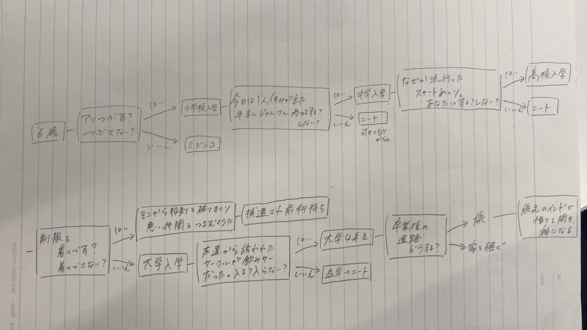

今回意外と簡単にできてしまったため、ミニゲームを追加しました。
・じゃんけん：牛乳じゃんけんに実際に参加できます。
・高校入試：高校に入学するためには高校入試に合格しなければなりません。合格点は7点です。
import random
import random
# ジャンケンゲームをプレイ
def play_janken():
choices = ["rock", "paper", "scissors"]
# プレイヤーの選択を受け取る
player_choice = input("ジャンケン：rock, paper, scissorsを選んでください: ").strip().lower()
if player_choice not in choices:
print("無効な選択です。再試行してください。")
return "再試行"
# コンピュータの選択をランダムに生成
computer_choice = random.choice(choices)
print(f"プレイヤー: {player_choice}")
print(f"コンピュータ: {computer_choice}")
# 勝敗の判定
if player_choice == computer_choice:
print("引き分けです。もう一度試してください。")
return "引き分け"
elif (
(player_choice == "rock" and computer_choice == "scissors") or
(player_choice == "paper" and computer_choice == "rock") or
(player_choice == "scissors" and computer_choice == "paper")
):
print("勝ちました！")
return "勝ち"
else:
print("負けました。")
return "負け"
import random
# quiz_questions リストを定義
quiz_questions = [
{
"question": "次の内、最大の惑星は？",
"options": ["地球", "木星", "火星"],
"correct_answer": "木星",
},
{
"question": "水の化学式は？",
"options": ["H2O", "CO2", "O2"],
"correct_answer": "H2O",
},
{
"question": "有名な物理学者アインシュタインの名前のファーストネームは？",
"options": ["Isaac", "Albert", "Thomas"],
"correct_answer": "Albert",
},
{
"question": "最初の元素周期表で最初に示される元素は？",
"options": ["水素", "ヘリウム", "リチウム"],
"correct_answer": "水素",
},
{
"question": "アメリカの首都はどこ？",
"options": ["ワシントンD.C.", "ニューヨーク", "ロサンゼルス"],
"correct_answer": "ワシントンD.C.",
},
{
"question": "最も売れた本は何ですか？",
"options": ["聖書", "ハリーポッターシリーズ", "ドン・キホーテ"],
"correct_answer": "聖書",
},
{
"question": "最大の惑星の衛星は何ですか？",
"options": ["月", "タイタン", "ガニメデ"],
"correct_answer": "ガニメデ",
},
{
"question": "最も多くの人に話されている言語は？",
"options": ["中国語", "英語", "スペイン語"],
"correct_answer": "中国語",
},
{
"question": "化学元素の記号 'Fe' は何を表しますか？",
"options": ["水素", "鉄", "フッ素"],
"correct_answer": "鉄",
},
{
"question": "ピサの斜塔はどの都市にありますか？",
"options": ["フィレンツェ", "ローマ", "ピサ"],
"correct_answer": "ピサ",
},
{
"question": "最も広い大洋は何ですか？",
"options": ["太平洋", "大西洋", "インド洋"],
"correct_answer": "太平洋",
},
]
# 他の質問もここに追加
# 以下、関数 take_quiz および他の関数を含むコード
# ...
def take_quiz():
score = 0
random.shuffle(quiz_questions)
print("高校入試があります.")
for i, question_data in enumerate(quiz_questions):
question = question_data["question"]
options = question_data["options"]
correct_answer = question_data["correct_answer"]
print(f"Question {i + 1}: {question}")
for j, option in enumerate(options):
print(f"{j + 1}. {option}")
choice = input("選択肢の番号を入力してください: ")
if options[int(choice) - 1] == correct_answer:
print("正解です！")
score += 1
else:
print(f"不正解です。正解は {correct_answer} でした。")
# 得点に応じて結果を表示
if score >= 7:
print("高校に合格しました。")
else:
print("高校に不合格です。ゲームオーバー！")
return "ゲームオーバー"
# ゲームのメイン関数
# ここで ant_game() 関数を定義
def ant_game():
print("アリをつぶす？ つぶす？つぶさない？")
user_choice = input("「つぶす」または「つぶさない」を入力してください： ").strip().lower()
if user_choice == "つぶす":
print("なんと小学生らしい。小学校入学です！")
# ここにストーリーの次の部分を追加
elif user_choice == "つぶさない":
print("ミジンコです！")
print("ゲームオーバー！ミジンコになりました。")
sys.exit(1) # ゲーム全体から抜け出す
if __name__ == "__main__":
ant_game() # ant_game() の実行
# ジャンケンゲームをプレイする部分
print("次の質問:")
print("無事に小学校に入学したあなた。今日はクラスで休みが出たよ。さて始まるのは牛乳じゃんけん。参加する？しない？")
user_choice = input("「参加する」または「参加しない」を入力してください： ").strip().lower()
if user_choice == "参加する":
result = play_janken() # ジャンケンゲームをプレイ
if result == "勝ち":
print("中学校入学！")
# ここにストーリーの次の部分を追加
elif result == "負け":
print("ゲームオーバー！負けました。")
sys.exit(1) # ゲーム全体から抜け出す
elif user_choice == "参加しない":
print("学校になじめず引きこもりからのニート！")
print("ゲームオーバー！ニートになりました。")
sys.exit(1) # ゲーム全体から抜け出す
# 以下の質問とゲームプレイのステップを続けて追加していきます。
# 学力テストを実行
result = take_quiz()
if result == "ゲームオーバー":
sys.exit(1) # ゲーム全体から抜け出す
if __name__ == "__main__":
ant_game()
# 新しい質問
print("次の質問:")
print("高校生活エンジョイ中のあなた。そんな中で悪魔のささやきが、、、校則違反だけどかっこいい！制服を着崩す？着崩さない？")
user_choice = input("「着崩す」または「着崩さない」を入力してください： ").strip().lower()
if user_choice == "着崩さない":
print("大学入学！")
# ここにストーリーの次の部分を追加
elif user_choice == "着崩す":
print("そこから校則を破るようになり、悪い仲間とつるむように！ついには犯罪にまで手を出し逮捕される")
print("ゲームオーバー！前科持ちになりました。")
sys.exit(1) # ゲーム終了
# 新しい質問
print("次の質問:")
print("大学に入り上京！新しい友達もできてサークルの新歓へ。しかしそこは飲みサーだった！そのサークル入る？入らない？")
user_choice = input("「入る」または「入らない」を入力してください： ").strip().lower()
if user_choice == "入る":
print("友達もできて大学生活が充実！")
# ここにストーリーの次の部分を追加
elif user_choice == "入らない":
print("友達が出来ず単位取得がうまくいかない。退学し引きこもりからのそのままニートに")
print("ゲームオーバー！ニートになりました。")
sys.exit(1) # ゲーム終了
# 新しい質問
print("次の質問:")
print("充実した大学生活を過ごしたあなたもついに大学4年生に。卒業後の進路はどうする？視野を広げるために旅に出る？実家は大企業なので社長になる？")
user_choice = input("「旅に出る」または「家業を継ぐ」を入力してください： ").strip().lower()
if user_choice == "旅に出る":
print("旅先のインドで悟りを開く。神になる")
sys.exit(1) # ゲーム終了
elif user_choice == "家業を継ぐ":
print("無事に社長に就任したが、その後脱税が発覚し逮捕")
print("ゲームオーバー！ミジンコになりました。")
sys.exit(1) # ゲーム終了
if __name__ == "__main__":
ant_game()
感想・まとめ
今回私はchat GDPを使用した為、簡単にコードを書くことが出来ました。
なのでどこか物足りず、ミニゲームを追加することにしました。しかしそこからが問題でした。
このミニゲームもchat GDPで作成したものですが、元のコードに追加するだけではエラーが出てしまうのです。
出たエラーをまたchat GDPに聞くと修正したコードを教えてくれます。しかし何度それを行っても上手くいかないのです。
今回は仕方なく一応プレイできる段階で諦めましたが、完全体ではありません。
現代段階でのエラーは高校入試をクリアすると、一度最初の質問に戻ってしまうというものです。
いつかこのバグをクリアしたいです。